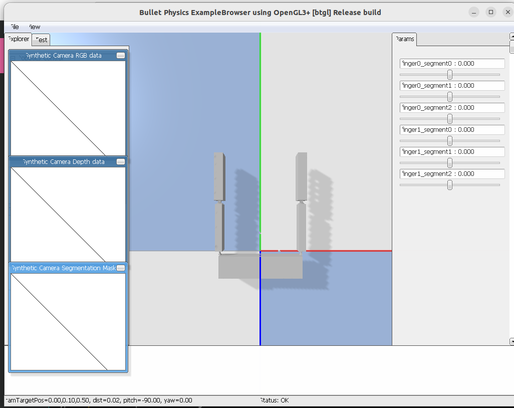
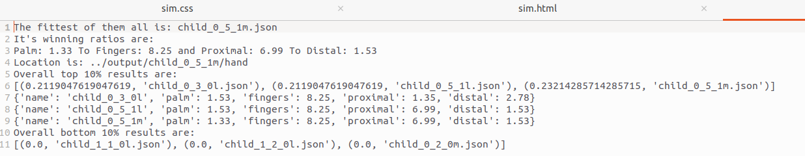
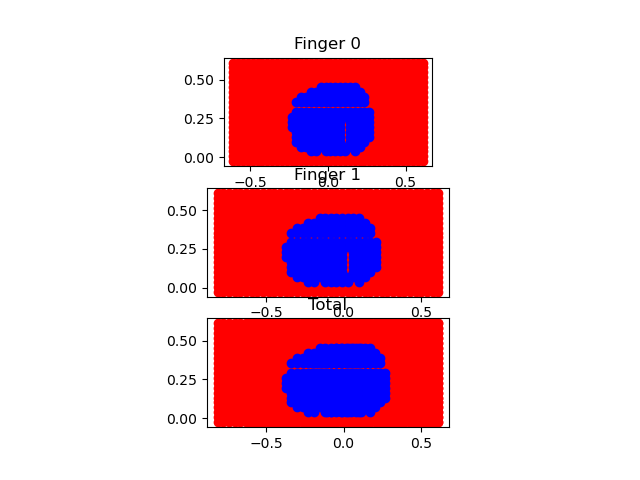

I was given the task of implementing an evolutionary algorithm into preexisting code.
To see my progress, click here.
This project operates via an evolutionary algorithm, and tests the reachable space for all two-fingered robotic hands generated. It does not currently have rotation(of the cube) implemented, and thus generates a hand with a short palm width and long fingers with even segments. A future goal of this project is to expand the reachable space testing by incorporating angle.
The current outputs look like:
This is the best hand.
This is a screenshot of the results file after 5 generations.
This is the reachable space of the best hand.